Data Structures and Algorithms
with Object-Oriented Design Patterns in C++
Data Structures and Algorithms
with Object-Oriented Design Patterns in C++A great deal of research has gone into the question of finding an appropriate set of parameters to use in Lehmer's algorithm. A good generator has the following characteristics:
The choice of modulus depends on the arithmetic precision used
to implement the algorithm.
A signed 32-bit integer can represent values between 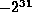 and 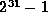.
Fortunately, the quantity 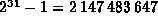
is a prime number! Therefore, it is an excellent choice for the modulus m.
Therefore, it is an excellent choice for the modulus m.
Because Equation  is slightly simpler than Equation ,
we choose to implement a multiplicative congruential generator (c=0).
The choice of a suitable multiplier is more difficult.
However, a popular choice is
because it satisfies all three criteria given above:
It results in a full period random number generator;
the generated sequence passes a wide variety of statistical tests
for randomness; and
it is possible to compute Equation
using 32-bit arithmetic without overflow.
is slightly simpler than Equation ,
we choose to implement a multiplicative congruential generator (c=0).
The choice of a suitable multiplier is more difficult.
However, a popular choice is
because it satisfies all three criteria given above:
It results in a full period random number generator;
the generated sequence passes a wide variety of statistical tests
for randomness; and
it is possible to compute Equation
using 32-bit arithmetic without overflow.
The algorithm is derived as follows:
First, let 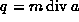 and .
In this case, 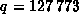, 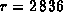 and r<q.
Next, we rewrite Equation as follows:
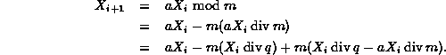
This somewhat complicated formula can be simplified if we let 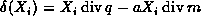:
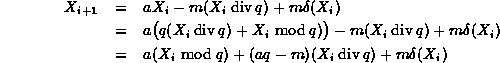
Finally, we make use of the fact that m=aq-r to get
Equation has several nice properties:
Both 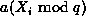 and 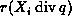
are positive integers between 0 and m-1.
Therefore the difference 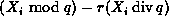
can be represented using a signed 32-bit integer without overflow.
Finally, 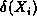 is either a zero or a one.
Specifically, it is zero when the sum of the first two terms
in Equation is negative and it is one when the sum is positive.
As a result, it is not necessary to compute --a simple test suffices to determine whether the third term is 0 or m.
 Copyright © 1997 by Bruno R. Preiss, P.Eng. All rights reserved.
Copyright © 1997 by Bruno R. Preiss, P.Eng. All rights reserved.